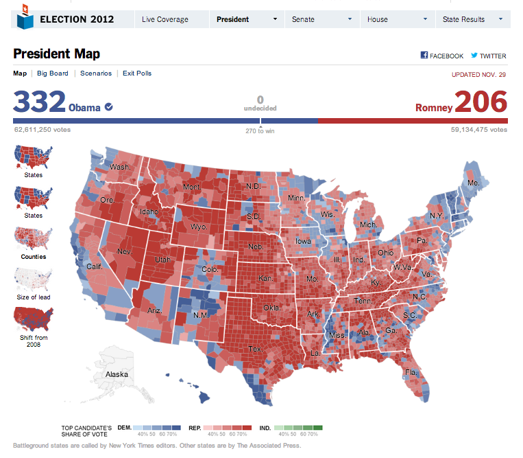

F
The personalised martini glass:
Data-driven news infographics
Martin Stabe
These slides: ft.com/smw2014
“Interactive News”

What we do
- “data journalism”
- “interactive data visualisation”
- “interactive graphics”
“News applications”
“a large web-based interactive database that tells a journalistic story using software instead of words and pictures.”
— Scott Klein, Propublica
News applications
Some characteristics of effective news apps:
What works in interactive grapics
- Information, not ornamentation
- Explanatory and exploratory
- Macro- and micro-level views of the same data
- Highlights personal relevancy
- Social media integration
‘Far’ and ‘near’ views

Personalisation

Explanatory and exploratory
Balancing author- and viewer-led navigation
Martini-glass narrative
“...following a tight narrative path early on (the stem of the glass) and then opening up later for free exploration (in the body of the glass).”

Source: Edward Segel and Jeffrey Heer, “Narrative Visualization: Telling Stories with Data” (2010)
Shneiderman’s mantra
“Overview first, zoom and filter, then details-on-demand.”
Source: Ben Shneiderman, “The Eyes Have It: A Task by Data Type Taxonomy for Information Visualizations”, (1996)
Personalisation
Social media integration

Social media integration

Elections
- Known in advance
- Data-rich
- National outcome
- Local detail
Source: Financial Times
Election map, 1896
New York Times, 1896
Source: Matthew Ericson
100 years later: 1996
Source: New York Times
104 years later: 2000

Source: New York Times
Now, with interactivity
Source: New York Times, 2012
More data!
Source: RTVE, 2011
Smaller units!
Source: Berliner Morgenpost, 2013
Polling stations!
Source: New Zealand Herald, 2014
Individual voters!
Source: Los Angles Times, 2013
Spot surprising results
Source: New York Times, 2010 via Matthew Ericson, “When Maps Shouldn’t Be Maps”, 2010
Slides: www.martinstabe.com/elections